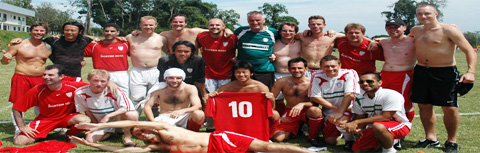

TML Walk Away With Phuket Trophies

Phuket, W/E 28/29th November.
Footy Japan successfully defended it's Masters title while BFC won the open at the 7th Phuket Soccer 7's. In a repeat of the final last year, Footy Japan beat ex socceroos Bondi FC 2-1, while first-timers BFC beat Singapore Spartans on penalties after a goal-less draw. The Footy Japan and BFC teams were a mix of players and ex-players from 9 different TML teams, proving once again that Tokyo has one of the best ex-pat leagues in Asia. more ...
FJ
No Goals in Yabe Clash
Hachioji Park, Sunday 29th November.
RW Clash and Yabe FC fought out a goalless draw in the Sunday evening kick-off at Hachioji.
Nil-nil draws are very unusual in the TML, from a quick review of the results from all three divisions this season, only one other game has remained goalless. Whether the lack of clean sheets is due to the attacking flair of the league's strikers or the ineptitude of its defenders is open to debate. In this case it was certainly a case of the defenders having better control of the game rather than a lack of effort from the forwards. more ...
AW
Embassy back to Winning Ways
Oi Futo, Saturday 28th November.
It had been a while. Not since the first day of the season had BEFC won a game. Last week, though, there was much to be proud about in a narrow defeat at YCAC in the cup, and the bare eleven (in number, not stark-naked) that showed up at Oifuto turned in a disciplined performance to notch three long-overdue points. more ...
RH
Lions Slip Past Sala
Hachioji Park, Saturday 28th November.
Lions went into the game looking for all 3-points in this 6-pointer, to open a gap from the bottom, in an attempt to bridge it with the top half of the table. Lions had good team, but missing the influential Abu, who could only play 10 minutes due to illness. more ...
HS
Beauty versus the Beast? Jekyll and Hyde for Both Sides
Fukuda Denshi, Monday 23rd November.
After a penalty victory in the cup it was a rather changed Clash team that took to the (perfectly sized and surfaced) pitch at Fukuda Denshi against free scoring Stoneds. The game ended 2-2 with Clash going 1-0 up then 2-1 down and equalizing shortly before the end. more ...
CA
 |
|
Andre takes it seriously playing for the the 'Green Machine' seen here relaxing at home.
|
Pinto Plunders Points
Fukuda Denshi, Sunday 22nd November.
Andre bags two and Kuni one, as Hibs beat a strong Lions team.
The Hibs limited the Lions to only a few half chances as Andre and Kuni did the damage at the other end. 0-0 at Half time, the Hibs remained calm, scoring a few minutes into the second half. Josh struck a curving free kick off the bar which Pinto followed in well to head home. 1-0 Hibs. more ...
MM
Geckoes Dickied by YCAC
YC&AC, Sunday 15th November.
The Geckoes were left disappointed not to get at least a point after dominating much of what was an entertaining and well-spirited game. We were the only team to take points in both games last season against the eventual TML Champions, YCAC, and after going in at half-time with much of the play and a goal to the good it looked as if we would walk away with all 3 points this time out. more ...
RW
Hibs Edge BFC in Epic Battle
Hachioji Park, Saturday 7th November.
BFC vs Hibs has become one of the true TML derbies, even if the Brits have faded a bit of late. Perhaps for that reason, we had over five spectators on the sideline to watch us play, a new record for the Hibs this season (Hopefully BFC is ok with us sharing their fans). They were treated to a great game in which the better team won. more ...
AP
Celts Head Over Heels at Sala Defeat
Fukuda Denshi, Saturday 7th November.
History was created tonight as a Kanto Celt, yes a Kanto Celt, upon scoring the crucial third goal which killed the game as a contest, turned away to do a cartwheel into a back somersault! Yes dear readers, there were many witnesses present. more ...
PMG
The Luck of the Dutch
YC&AC, Sunday 8th November.
The trek to YC&C is always a highlight of the season - climbing up the hill from Yamate station, regretting that last pint from the previous night every step of the way...finally finding your way to the ground led by a waft of fried food.... more ...
LVL
BFC Lose to Hibs But Not Without a Fight
Hachioji Park, Saturday 7th November.
I think a neutral would say a draw would've been a fair result. I'm not neutral and think a BFC win was deserved. A missed PK, a blatant PK disallowed, the usual array of quality saves and sweeping by Hitoshi in the Hibs' goal and the final whistle goes after Sho is fouled on the edge of the Hibs' box...free kick...? Apparently not, final whistle. Sour grapes? Maybe. more ...
JM
Shane Battle Back to Rain on Republic Victory Parade
YCAC, Sunday 1st November.
“A free beer for the first man to score in the new kit”
With a depleted squad following a heavy combination of marriage parties, hangovers, injuries and just plain fate a much reduced Shane FC made it to Yokohama for an evening kick off and the opportunity of grabbing 3 much needed points against lowly Guarana Republic. more ...
MG
The Clash fought the George and the George won.
Horisaki Koen Tues, 3rd November.
On the national day of culture in Japan, what could be more cultural than a game of footy? With players from all over the globe exchanging well-known expletives and a few previously unknown hand gestures.
Horisaki Koen was the venue for this third division meeting between Robert Walter’s Clash and King George F.C. By 7pm there was a chill in the air which gave a timely reminder that winter is quickly closing in and we shouldn’t leave our Xmas shopping too late. more ...
BS
Sun Destroyed by Fighter Jets
Hachioji Park Tues, 3rd November.
The pre-game build up consisted of two messages from the Jets’ Man City supporting captain. One: any team with the word “Utd” in it deserves a good kicking, and two: we will definitely concede goals today. But don’t worry; we usually do anyway.
It was always going to be a high-scoring game. Two teams with great attacks, one with a weak defence and one with a dodgy defence. more ...
JR
YCAC No Longer Fear Old Nemesis
YCAC, Sunday 1st November.
YC&AC 1st team put on a goal rush show on Sunday afternoon, scoring five goals against their old Nemesis, captain Guido Geisler's well commanded Sala FC. more ...
JT
|